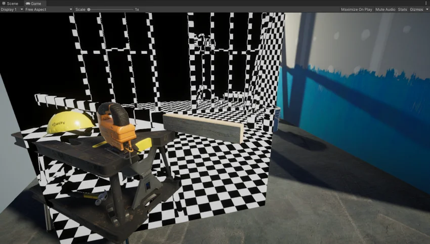
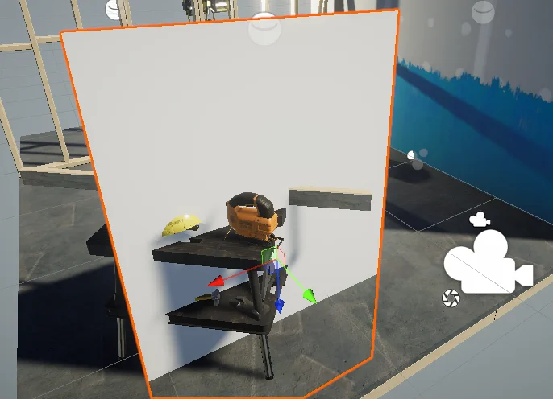
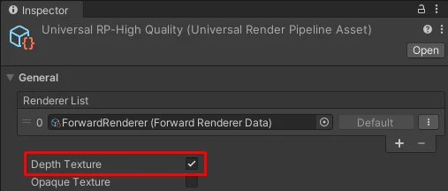

The Unity shader in this example reconstructs the world space positions for pixels using a depth texture and screen space UV coordinates. The shader draws a checkerboard pattern on a mesh to visualize the positions.
The following illustration shows the end result:

This page contains the following sections:
Create the sample scene to follow the steps in this section:
Install URP into an existing Unity project, or create a new project using the Universal Project Template.
In the sample Scene, create a plane GameObject and place it so that it occludes some of the GameObjects.

Create a new Material and assign it to the plane.
Create a new shader and assign it to the material. Copy and paste the Unity shader source code from the page URP unlit basic shader.
Select the URP asset.
In the URP asset, in the General section, enable Depth Texture.

Open the shader you created on step 4.
This section assumes that you copied the source code from the page URP unlit basic shader.
Make the following changes to the ShaderLab code:
In the HLSLPROGRAM block, add the include declaration for the depth texture shader header. For example, place it under the existing include declaration for Core.hlsl.
#include "Packages/com.unity.render-pipelines.universal/ShaderLibrary/Core.hlsl"
// The DeclareDepthTexture.hlsl file contains utilities for sampling the Camera
// depth texture.
#include "Packages/com.unity.render-pipelines.universal/ShaderLibrary/DeclareDepthTexture.hlsl"
The DeclareDepthTexture.hlsl file contains functions for sampling the Camera depth texture. This example uses the SampleSceneDepth function for sampling the Z coordinate for pixels.
In the fragment shader definition, add Varyings IN as input.
half4 frag(Varyings IN) : SV_Target
In this example, the fragment shader uses the positionHCS property from the Varyings struct to get locations of pixels.
In the fragment shader, to calculate the UV coordinates for sampling the depth buffer, divide the pixel location by the render target resolution _ScaledScreenParams. The property _ScaledScreenParams.xy takes into account any scaling of the render target, such as Dynamic Resolution.
float2 UV = IN.positionHCS.xy / _ScaledScreenParams.xy;
In the fragment shader, use the SampleSceneDepth functions to sample the depth buffer.
#if UNITY_REVERSED_Z
real depth = SampleSceneDepth(UV);
#else
// Adjust z to match NDC for OpenGL
real depth = lerp(UNITY_NEAR_CLIP_VALUE, 1, SampleSceneDepth(UV));
#endif
The SampleSceneDepth function comes from the DeclareDepthTexture.hlsl file. It returns the Z value in the range [0, 1].
For the reconstruction function (ComputeWorldSpacePosition) to work, the depth value must be in the normalized device coordinate (NDC) space. In D3D, Z is in range [0,1], in OpenGL, Z is in range [-1, 1].
This example uses the UNITY_REVERSED_Z constant to determine the platform and adjust the Z value range. Check step 6 in this example for more explanations.
The UNITY_NEAR_CLIP_VALUE variable is a platform independent near clipping plane value for the clip space.
For more information, refer to Platform-specific rendering differences.
Reconstruct world space positions from the UV and Z coordinates of pixels.
float3 worldPos = ComputeWorldSpacePosition(UV, depth, UNITY_MATRIX_I_VP);
ComputeWorldSpacePosition is a utility function that calculates the world space position from the UV and the depth (Z) values. This function is defined in the Common.hlsl file of the SRP Core package.
UNITY_MATRIX_I_VP is an inverse view projection matrix which transforms points from the clip space to the world space.
To visualize the world space positions of pixels, create the checkboard effect.
uint scale = 10;
uint3 worldIntPos = uint3(abs(worldPos.xyz * scale));
bool white = (worldIntPos.x & 1) ^ (worldIntPos.y & 1) ^ (worldIntPos.z & 1);
half4 color = white ? half4(1,1,1,1) : half4(0,0,0,1);
The scale is the inverse scale of the checkboard pattern size.
The abs function mirrors the pattern to the negative coordinate side.
The uint3 declaration for the worldIntPos variable snaps the coordinate positions to integers.
The AND operator in the expresion <integer value> & 1 checks if the value is even (0) or odd (1). The expression lets the code divide the surface into squares.
The XOR operator in the expresion <integer value> ^ <integer value> flips the square color.
The depth buffer might not have valid values for areas where no geometry is rendered. The following code draws black color in such areas.
#if UNITY_REVERSED_Z
if(depth < 0.0001)
return half4(0,0,0,1);
#else
if(depth > 0.9999)
return half4(0,0,0,1);
#endif
Different platforms use different Z values for far clipping planes (0 == far, or 1 == far). The UNITY_REVERSED_Z constant lets the code handle all platforms correctly.
Save the shader code, the example is ready.
The following illustration shows the end result:
Below is the complete ShaderLab code for this example.
// This Unity shader reconstructs the world space positions for pixels using a depth
// texture and screen space UV coordinates. The shader draws a checkerboard pattern
// on a mesh to visualize the positions.
Shader "Example/URPReconstructWorldPos"
{
Properties
{ }
// The SubShader block containing the Shader code.
SubShader
{
// SubShader Tags define when and under which conditions a SubShader block or
// a pass is executed.
Tags { "RenderType" = "Opaque" "RenderPipeline" = "UniversalPipeline" }
Pass
{
HLSLPROGRAM
// This line defines the name of the vertex shader.
#pragma vertex vert
// This line defines the name of the fragment shader.
#pragma fragment frag
// The Core.hlsl file contains definitions of frequently used HLSL
// macros and functions, and also contains #include references to other
// HLSL files (for example, Common.hlsl, SpaceTransforms.hlsl, etc.).
#include "Packages/com.unity.render-pipelines.universal/ShaderLibrary/Core.hlsl"
// The DeclareDepthTexture.hlsl file contains utilities for sampling the
// Camera depth texture.
#include "Packages/com.unity.render-pipelines.universal/ShaderLibrary/DeclareDepthTexture.hlsl"
// This example uses the Attributes structure as an input structure in
// the vertex shader.
struct Attributes
{
// The positionOS variable contains the vertex positions in object
// space.
float4 positionOS : POSITION;
};
struct Varyings
{
// The positions in this struct must have the SV_POSITION semantic.
float4 positionHCS : SV_POSITION;
};
// The vertex shader definition with properties defined in the Varyings
// structure. The type of the vert function must match the type (struct)
// that it returns.
Varyings vert(Attributes IN)
{
// Declaring the output object (OUT) with the Varyings struct.
Varyings OUT;
// The TransformObjectToHClip function transforms vertex positions
// from object space to homogenous clip space.
OUT.positionHCS = TransformObjectToHClip(IN.positionOS.xyz);
// Returning the output.
return OUT;
}
// The fragment shader definition.
// The Varyings input structure contains interpolated values from the
// vertex shader. The fragment shader uses the `positionHCS` property
// from the `Varyings` struct to get locations of pixels.
half4 frag(Varyings IN) : SV_Target
{
// To calculate the UV coordinates for sampling the depth buffer,
// divide the pixel location by the render target resolution
// _ScaledScreenParams.
float2 UV = IN.positionHCS.xy / _ScaledScreenParams.xy;
// Sample the depth from the Camera depth texture.
#if UNITY_REVERSED_Z
real depth = SampleSceneDepth(UV);
#else
// Adjust Z to match NDC for OpenGL ([-1, 1])
real depth = lerp(UNITY_NEAR_CLIP_VALUE, 1, SampleSceneDepth(UV));
#endif
// Reconstruct the world space positions.
float3 worldPos = ComputeWorldSpacePosition(UV, depth, UNITY_MATRIX_I_VP);
// The following part creates the checkerboard effect.
// Scale is the inverse size of the squares.
uint scale = 10;
// Scale, mirror and snap the coordinates.
uint3 worldIntPos = uint3(abs(worldPos.xyz * scale));
// Divide the surface into squares. Calculate the color ID value.
bool white = ((worldIntPos.x) & 1) ^ (worldIntPos.y & 1) ^ (worldIntPos.z & 1);
// Color the square based on the ID value (black or white).
half4 color = white ? half4(1,1,1,1) : half4(0,0,0,1);
// Set the color to black in the proximity to the far clipping
// plane.
#if UNITY_REVERSED_Z
// Case for platforms with REVERSED_Z, such as D3D.
if(depth < 0.0001)
return half4(0,0,0,1);
#else
// Case for platforms without REVERSED_Z, such as OpenGL.
if(depth > 0.9999)
return half4(0,0,0,1);
#endif
return color;
}
ENDHLSL
}
}
}